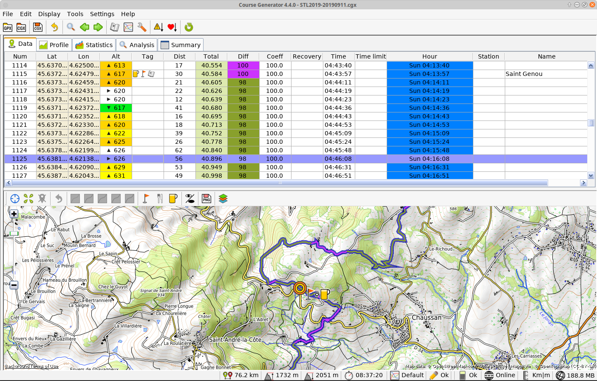
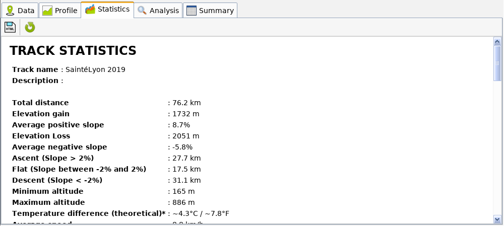
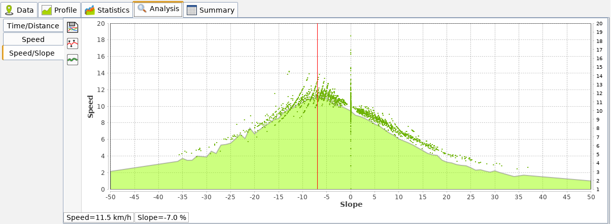
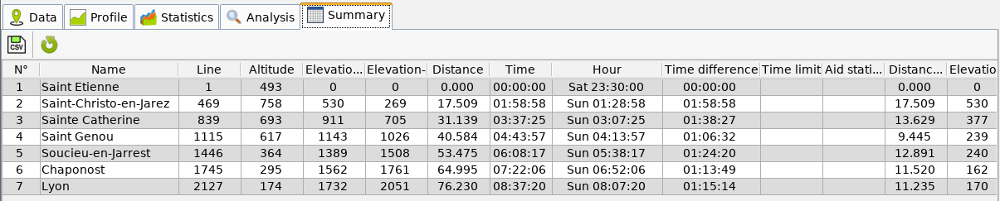
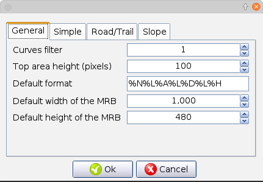
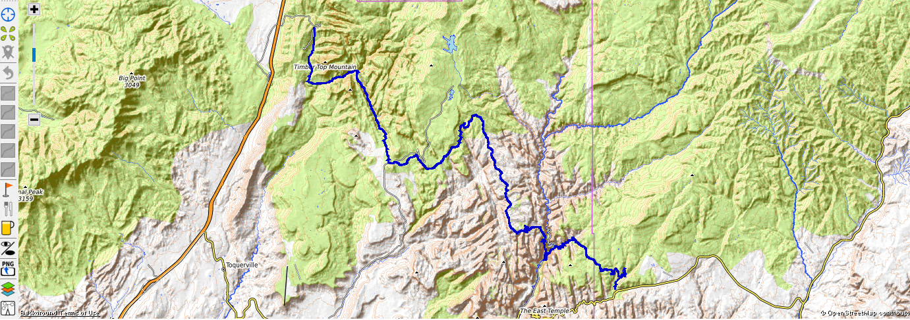

Wikipedia source
© 2017 Pierre Delore (pierre@TechAndRun.com), CC BY-NC
Course Generator allows you to process your GPS files in order to :
And many other things…
Writing conventions have been adopted in this manual. They are detailed below.
I created Course Generator in 2008 to help me prepare for my first 100km Ultra-trail. I completed it following my needs. A small article in Ultrafondu (French magazin) allowed me to start making it known and I then made it grow with the user feedbacks. It has evolved enormously and many times, I have rewritten it to fit my needs. Each time it was a challenge and like the races that I ran, it was an adventure that made me grow (knowledge, questioning, open-mindedness …).
Course Generator does not pretend to give you totally accurate results. Too much depends on you and external conditions. Consider this software as a help to prepare your futur adventures.
You notice that I didn’t use the term “race” because for me the “adventure” approach of a race, as hard as it is, has always allowed me to go through with its positive approach (not to mention the chrono anyway:) ).
The development of Course Generator has been and continues to be an adventure.
If you like this software you can contribute in different ways:
Go on an adventure with Course Generator.
Pierre DELORE
The software collects information about your hardware and software configuration in the logs. These data are in the ‘logs’ directory which can be accessed via the menu “Tools> Open the”Speed/Slope" folder“. Nothing exit from your computer. It is only in case of problem that I will ask you to send me the ‘logs’ files.
To work Course Generator needs, as input, data containing a sequence of GPS points representing a track.
This data can be:
The GPX format is a standard cartographic data exchange format created by GARMIN.These data are either from a GPS or from a software or website.
It allows to exchange:
Wikipedia source
When opening a GPX file, Course Generator only read tracks. Other type of data are ignored.
The CGX format is the native format of Course Generator. It allows in addition to the latitude, longitude and altitude, to store all specific data of Course Generator. This includes for example: ground difficulty, aid station, comments, mini-roadbook data … This format allows you to exchange a track with a complete set of information about it.
The diagram below shows the operating principle of Course Generator.

The following use cases could be considered (non-exhaustive list):

Must I have Garmin GPS to use Course Generator?
No! But it’s a plus if you want to use the virtual partner feature. That’s what pushed me to create Course Generator (even though now I almost don’t use this feature anymore).
Au lancement du logiciel vous obtenez la fenêtre suivante:

L’interface du logiciel est composée (de haut en bas):

Ouvrir un fichier GPX : Permet de charger un fichier au format GPX. Raccourci clavier: [MAJ+CTRL+O].
Ouvrir un fichier CGX : Permet de charger un fichier au format CGX. Raccourci clavier: [CTRL+O].
Derniers fichiers GPX : Permet l’affichage d’un sous-menu listant les 5 derniers fichiers GPX qui ont été ouvert. Un clic sur un de ces fichiers permet de l’ouvrir.
Derniers fichiers CGX : Permet l’affichage d’un sous-menu listant les 5 derniers fichiers CGX qui ont été ouvert. Un clic sur un de ces fichiers permet de l’ouvrir.
Sauver CGX : Permet de sauver les données du parcours au format CGX. Toutes les données du parcours (difficultés, coefficient de fatigue, temps de ravitaillement….) sont sauvegardées. Raccourci clavier: [CTRL+S].
Sauver GPX : Permet de sauver les données du parcours au format GPX. Attention! Seules les données de latitude, de longitude, d’altitude et de temps sont sauvées.
Sauver CSV : Permet de sauver les données du parcours au format CSV. Ce fichier pourra être ouvert par un tableur comme Excel ou OpenOffice Calc.
Importer un fichier GPX : Permet d’insérer un fichier GPX au début ou à la fin du parcours actif.
Importer un fichier CGX : Permet d’insérer un fichier CGX au début ou à la fin du parcours actif.
Sauver une partie du parcours en CGX : Permet de sauver les lignes sélectionnées du tableau au format CGX. Toutes les données du parcours (difficultés, coefficient de fatigue, temps de ravitaillement….) sont sauvegardées.
Sauver une partie du parcours en GPX : Permet de sauver les lignes sélectionnées du tableau au format GPX. Attention! Seules les données de latitude, de longitude, d’altitude et de temps sont sauvés.
Sauver une partie du parcours en CSV : Permet de sauver les lignes sélectionnées du tableau au format CSV. Ce fichier pourra être ouvert par un tableur comme Excel ou OpenOffice Calc.
Importer des points : Permet d’importer des points sauvegardés au format CGP.
Exporter des points : Permet de sauvegarder les points marqués dans un fichier au format CGP.
Exporter des tags en waypoints : Permet de sauvegarder les tags sélectionnés dans un fichier GPX sous forme de waypoints. Cela permet d’avoir, sur les GPS, des informations complémentaires en plus des traces.
Quitter Course Generator : Permet d’arrêter l’exécution de Course Generator. raccourci clavier: [Alt+F4].

Copier : Permet de copier la cellule courante dans le presse papier. Raccourci clavier: [CTRL+C].
Recherche d’un point… : Permet de rechercher un point GPS par sa longitude et sa latitude. Le point le plus proche est sélectionné. Raccourci clavier: [CTRL+F].
Marquer la position courante : Permet de mettre une marque sur la ligne courante. Si la ligne contient déjà une marque, elle est alors supprimée. Raccourci clavier: [F6].
Aller à la marque suivante : Permet de sélectionner la ligne contenant le Tag suivant. Raccourci clavier: [F7].
Aller à la marque précédente : Permet de sélectionner la ligne contenant le Tag précédent. Raccourci clavier: [Ctrl+F7].


Détermination des mini/maxi : Permet de déterminer les points haut et bas du parcours.
Inversion du parcours : Permet d’inverser le sens du parcours.
Définir un nouveau point de départ: Permet, pour un circuit en boucle, de définir un nouveau point de départ.
Estimer le temps de parcours : Permet de lancer le calcul afin de déterminer le temps de passage pour chaque point GPS du parcours. Raccourci clavier: [F5].
Afficher le répertoire contenant les fichiers courbes vitesse/pente : Ouvre l’explorateur de fichier et affiche le répertoire correspondant.

Paramètres du parcours… : Permet d’ouvrir une fenêtre permettant de régler les paramètres de la course. Raccourci clavier: [F9].
Courbes vitesses/pentes… : Permet d’ouvrir une fenêtre permettant de choisir ou de créer une courbe de vitesse par rapport à la pente.
Paramètres de Course Generator… : Permet de régler les paramètres spécifique au logiciel Course Generator.

Aide : Affiche ce document.
Encourager l’auteur… : Ce menu ouvre votre navigateur internet et affiche la page internet permettant de faire un don à l’auteur afin de l’encourager dans le développement de Course Generator.
Page internet de Course Generator… : Ce menu ouvre votre navigateur internet et affiche la page internet sur les dernières nouvelles concernant Course Generator.
A propos… : Permet d’afficher les informations de copyright et de version du logiciel.

 : Permet de charger un parcours au format GPX
: Permet de charger un parcours au format GPX : Permet de charger un parcours au format CGX
: Permet de charger un parcours au format CGX : Permet de sauvegarder le parcours au format CGX
: Permet de sauvegarder le parcours au format CGX : Permet d’annuler la dernière commande
: Permet d’annuler la dernière commande : Permet de faire la recherche d’une position GPS
: Permet de faire la recherche d’une position GPS : Permet de rechercher la marque précédente
: Permet de rechercher la marque précédente : Permet de rechercher la marque suivante
: Permet de rechercher la marque suivante : Permet d’afficher le mini roadbook
: Permet d’afficher le mini roadbook : Permet d’afficher la fenêtre de choix de la courbe vitesse/pente
: Permet d’afficher la fenêtre de choix de la courbe vitesse/pente : Permet d’ouvrir la fenêtre de paramètres du parcours
: Permet d’ouvrir la fenêtre de paramètres du parcours : Permet d’afficher la fenêtre de réglage global de la qualité du terrain
: Permet d’afficher la fenêtre de réglage global de la qualité du terrain : Permet d’afficher la fenêtre de réglage global du coefficient de fatigue
: Permet d’afficher la fenêtre de réglage global du coefficient de fatigue : Permet de calculer le temps de parcours
: Permet de calculer le temps de parcoursSituée sur le bas de la fenêtre elle affiche les informations sur l’application et le parcours.

 : Distance totale du parcours.
: Distance totale du parcours. : Dénivelé positif total du parcours.
: Dénivelé positif total du parcours. : Dénivelé négatif total du parcours.
: Dénivelé négatif total du parcours. : Temps total pour réaliser le parcours.
: Temps total pour réaliser le parcours. : Courbe ‘Vitesse/Pente’ sélectionnée.
: Courbe ‘Vitesse/Pente’ sélectionnée. : Indique qu’une barrière horaire a été dépassé à un endroit du parcours. Un clic sur cet indicateur positionne la sélection du tableau sur la première ligne concernée.
: Indique qu’une barrière horaire a été dépassé à un endroit du parcours. Un clic sur cet indicateur positionne la sélection du tableau sur la première ligne concernée. : Le parcours a été modifié. Il est nécessaire de le sauvegarder.
: Le parcours a été modifié. Il est nécessaire de le sauvegarder. : Le parcours a été modifié. Il est nécessaire de relancer le calcul (bouton ou [F5]).
: Le parcours a été modifié. Il est nécessaire de relancer le calcul (bouton ou [F5]). : Indique l’état de la connexion internet.
: Indique l’état de la connexion internet. : Indique les unités de mesures utilisées.
: Indique les unités de mesures utilisées. : Indique la taille disque utilisée par les cartes.
: Indique la taille disque utilisée par les cartes.La zone haute contient une série d’onglet qui permet de choisir le type de donnée à afficher.
Cet onglet affiche toutes les données du parcours.

Un double clique sur une des ligne ouvre la fenêtre d’édition.
Le détail des colonnes est décrit ci-dessous:
 : Indique un point haut.
: Indique un point haut. : Indique un point bas.
: Indique un point bas. : Indique un point de ravitaillement.
: Indique un point de ravitaillement. : Indique un point d’eau.
: Indique un point d’eau. : Indique que le point a été marqué.
: Indique que le point a été marqué. : Indique un lieu remarquable.
: Indique un lieu remarquable. : Indique une note.
: Indique une note. : Indique une information.
: Indique une information. : Indique le début ou la fin d’une section de roadbook. permet de remplir rapidement un ensemble de position. Vous trouverez ci-dessous les valeurs utilisés par Softrun (www.softrun.fr). Merci à Rémi Poisvert pour ces informations.
permet de définir une régle d’évolution globale du coefficient de fatigue..
: Indique le début ou la fin d’une section de roadbook. permet de remplir rapidement un ensemble de position. Vous trouverez ci-dessous les valeurs utilisés par Softrun (www.softrun.fr). Merci à Rémi Poisvert pour ces informations.
permet de définir une régle d’évolution globale du coefficient de fatigue..Cet onglet affiche le profil du parcours.

Si une marque a été positionnée dans le tableau alors un point apparaît sur la courbe ainsi que son numéro d’ordre. Ce numéro correspond à la ligne du tableau de l’onglet Résumé.
Un clique gauche sur la courbe permet de positionner un curseur et d’obtenir des informations sur le point (issue du tableau).
Un clique droit sur la courbe permet d’afficher un menu permettant de régler l’affichage de la courbe et de la sauvegarder sous forme d’image (format PNG).
Le bouton  permet d’afficher la position des lignes du tableau “Résumé”.
permet d’afficher la position des lignes du tableau “Résumé”.
Cet onglet permet d’obtenir des statistiques sur le parcours.

Les statistiques concernent entre autre:
Le bouton  permet de sauver ces données au format HTML.
permet de sauver ces données au format HTML.
Le bouton  permet de rafraîchir les données.
permet de rafraîchir les données.
Cet onglet permet d’obtenir une analyse de votre parcours. Il contient 3 sous-onglets qui sont détaillés ci-dessous.
Cet onglet pemret de faire une analyse de votre vitesse dans le temps. 
Deux courbes sont présentes:
L’étude de la courbe de temps/distance permet de voir son évolution sur le parcours (accélération ralentissement, arrêté). Le changement de pente de la courbe rouge indique une variation de vitesse.
Les cas suivants sont possibles:
Cet onglet permet d’obtenir de faire une analyse de la vitesse sur votre parcours.

Deux courbes sont présentes:
Le bouton permet de sauver le profil sous forme d’image.
Cet onglet permet d’extrapoler une courbe vitesse par rapport à la pente.

Cette courbe est utile pour créer ses propres courbes vitesse/pente en fonction d’un parcours réalisé. Deux courbes sont présentes:
Le bouton permet de sauvegarder la courbe résultat (courbe rouge) dans la bibliothèque des courbes vitesse/pente. Elle sera exploitable dans la fenêtre courbe.
La boite de dialogue suivante apparaît:

Le champ de saisie “Nom” permet de saisir le nom de la courbe.
Le champ de saisie “Commentaire” permet de saisir un commentaire.
Le bouton  permet de corriger la courbe vitesse/pente avec les paramètres du parcours (difficulté du terrain et fatigue).
permet de corriger la courbe vitesse/pente avec les paramètres du parcours (difficulté du terrain et fatigue).
Le bouton  permet de filtrer la vitesse de la courbe vitesse/pente.
permet de filtrer la vitesse de la courbe vitesse/pente.
Cet onglet affiche un tableau regroupant toutes les lignes du parcours contenant une marque.

Pour chaque ligne vous avez:
Le bouton permet de sauvegarder les données du tableau au format CSV afin de les exploiter dans un tableur (Excel, OpenOffice Calc…).
Le bouton permet de rafraîchir les données.
The normal procedure for using Course Generator is:
The subchapters will describe all these manipulations (And much more).
Two types of files can be opened by Course Generator.
The loading of a track is done by the menu “File> Open GPX” or “File> Open CGX” according to the chosen format.
When opening the file you may get the following message: ((image message))
This message appears because some files do not contain time data, which prevents Course Generator from displaying the time and time of passage for each point. These columns are then set to 0. Setting of parameters of the track then the execution of the calculation of the track are then necessary.
The setting of the track is done with “Settings>Track settings…” or [F9].
The configuration window below is then displayed.
You can then:
The following window appears:

Enter the time zone (1 for France).
Once the setting is completed, press “Ok” to validate. If you have chosen to take into account the night effect, you will see that the “Time” column shows a blue background during the night and green periods during the daytime periods.
In order to have a track time consistent with your level, you have to choose or create a speed curve according to the slope. This curve goes from -50% slope (downhill) to + 50% slope (climb). The choice of the curve is made by the choice of the speed that one wants to “hold” when the slope is null (0%) on a road. A set of curves have been created to cover most running uses.
The menu “Settings>Speed/Slope curves…” or the button to display the dialog box for selecting and managing curves.
On the left appears the list of curves already created. During the creation, an explicit name was given to them to find them quickly. Try to preserve this principle if you create new curves.
The button  load the data from the selected curve file into the list. The button
load the data from the selected curve file into the list. The button  allows you to modify the data of the selected curve. The button
allows you to modify the data of the selected curve. The button  allows you to create a new curve. The button
allows you to create a new curve. The button  duplicate the selected curve. The button
duplicate the selected curve. The button  deletes the selected curve.
deletes the selected curve.
How to choose a speed curve? This will depend on you, your goals… You can base yourself on a percentage of your VMA. For example for a long trail you can take 60% of your VMA. About 10km/h in my case, I then select the curve of 10km/h. There is also the pratice. At the beginning you will surely underestimate or over-evaluate your speed. But over time your choice will become more and more precise.
Notes:
* If you create new curves that seem interesting to you, do not hesitate to send them to me so that I can add them on the website as well as in the next versions. * Each curve is a file whose extension is ‘.par’. These files are accessible through the menu “Tools>Open”Speed/Slope" folder“. This will open the file manager and display the contents of the directory.
The “Diff” column is used to ‘quantify’ the difficulty of the field.
You can quickly enter terrain difficulty for a set of points. Simply select the first line and then while holding down the SHIFT key you select the following lines (with mouse or keyboard). The button to display the auto-fill dialog.

The “Start” area is used to define the start line (from the beginning or from a specific line number). The “End” area is used to define the end line (to the end or to a specific line number). The zone “Difficulty” makes it possible to choose the difficulty of the field. You can either use the pre-determined values or enter your own difficulty value.
This action can also be done on the tracke map (see below).
Note:
It is sometimes impossible to determine the quality of the field because of the ignorance of it. It may be wise to set an average field quality for the entire track. For example, the “Montagn’hard 100” has been qualified in middle filed on the whole track. Even if some passages were very difficult (scree, slippery areas …) and other very easy (roads or tracks). Don’t try to take intop account the slope of the field because this is taken into account via the “Speed/Slope” curve and the calculation of the slope is automatically done by Course Generator.
The “Coeff” column is used to ‘quantify’ fatigue over time.
You can quickly enter the fatigue coefficient for a set of points (more generally for the entire track). Simply select the first line and then while holding down the SHIFT key you select the following lines (with mouse or keyboard). The button allows to display the auto-fill dialog.

The “Start” area is used to define the start line (from the beginning or from a specific line number). The “Initial value” field is used to enter the corresponding value.
The “End” area is used to define the end line (to the end or to a specific line number). The “Ending value” field is used to enter the corresponding value.
If the ending value is not equal to the initial value then the intermediate lines will have a gradual and linear variation of the values. Manual edits made through the line editor will be overwritten.
The settings made in this window will be global and stored in the CGX file.
The area “Help” allows according to your estimated to give you an approximate value of the coefficient of fatigue. This value can be copied to in the “Initial value” and “Ending value” fields with the buttons “> Start” and “> End”.
In order to stick to reality, you can enter for a given point the time you plan for your refueling (or your rest).
The following dialog box is displayed:

The “Aid station time” fields are used to enter the time at this location (hours, minutes and seconds). The “0” button allows you to reset the time to 00h00mm00s.
FAQ! The time or hour displayed on the line containing a refueling time is the time or hour you plan to leave this position. It’s the design of Course Generator which oblige this method of calculation.
To summarize: [Hour] = [Hour of the previous position] + [Travel time between 2 positions] + [Refueling time]
[Time] = [Time of the previous position] + [Travel time between 2 positions] + [Refueling time]
You can enter for a given point the recovery coefficient after refueling or rest. To do this, go to the corresponding cell and open the line editor by double-clicking.
The following dialog box is displayed:
The “Recovery” field is used to enter the recovery coefficient (between 0 and 100). This value is relative. If you think that you will recover 5% of fatigue coefficient, you must enter 5 and not the value you think you will have (eg from 85% to 90%).
Note :
After modifying the “Recovery” column, it is necessary to restart a global calculation with the button in order to have your input taken into account.
You can enter for a given point the scheduled time barrier. This time barrier is expressed in time since the start and not the time at the point. This makes it possible to take into account the departure delays (for example the UTMB 2011 with 5 hours delay). To do this, go to the corresponding cell and open the line editor by double-clicking.
The following dialog box is displayed:
The “Cut-off time” fields are used to enter the cut-off time (hours, minutes and seconds). The “0” button allows you to reset the time to 00h00mm00s.
In order to take into account the input it is necessary to run a calculation with the button . After the calculation if one of the position time exceeds a cut-off time then a red indicator “Cut-off time” will appear in the lower bar. A click on the indicator will select the first line of the track having a cut-off time.
For each point you can have indicators or tags that indicates a particularity of the point.
The different indicators are as follows:
: Indicates a high point. This indicator selected manually or automatically by the function “Find Min/Max”. : Indicates a low point. This indicator selected manually or automatically by the function “Find Min/Max”. : Indicates a refueling point (eat or drink) : Indicates a water point : Indicates a view point : Indicates a special point. This indicator is called “Mark” and allows you to split the track into steps. Each mark adds a line in the summary table. : Indicates a note. : Indicates information. : Indicates the beginning of a new part of the roadbookTo set the indicators for a position, select the corresponding cell concerned and open the line editor by double-clicking.
The following dialog box is displayed:
The indicators appear in front of “Tags”.
In order to save time, keyboard shortcuts are available:
Once the track parameters have been entered, it is necessary to press the button to start the calculation of the time for each point. The columns ‘Time’ and ‘Hours’ are then updated according to the settings you have made previously.In the status bar at the bottom of the window, the total time is updated.
Course Generatoroffers the possibility to save your track in several formats.
This chapter will introduce you to more complete uses of Course Generator.
It is possible to search for a GPS point on the track via the “Edit>Search a point…” menu or with the keyboard shortcut [Ctrl + F].

In the dialog box, it is necessary to enter the latitude and longitude of the point and then press the search button .
Course Generator will search for the nearest point of the entered coordinates. It will indicate the line corresponding to the point found as well as the distance between the point found and the coordinates entered. The line containing the found point is then selected.
The “Tools>Find Min/Max” menu is used to automatically find the high and low points of the track.
Each found position is marked with an indicator (high point) or (low point).
It can happen that an altitude of the track is incoherent. This can happen if you, or an Openrunner type website, have made an automatic correction of altitudes. The SRTM database on which these sites are based has area without altitude. The given base then returns an altitude of 32768m. In order to overcome this problem you can edit the altitude of the concerned point(s).
To do this, go to the corresponding cell and open the line editor by double-clicking.
The following dialog box is displayed:
The “Altitude” field is used to enter the new altitude.
It will be necessary to restart a calculation with the button to take into account the new altitude.
Course Generator offers the opportunity to merge two courses.
The procedure is as follows:

If you have other tracks to merge, simply repeat the process.
After the merge of the tracks you will have to modify the settings of the fatigue coefficients and restart a computation (butotn or [F5]) because the time data will be wrong.
Once you have completed the merge and restarted a calculation, you will be able to save the track.
Course Generator offers the opportunity to save part of a track.
The procedure is as follows:
Course Generator offers the ability to save GPS points containing tags (or indicator) as a waypoint. These waypoints can be added to your GPS to have, for example, the display of the track with additional information such as passes, aid stations and cities.
The procedure is as follows:

The operation of this file can be done, for example, with Garmin’s Basecamp software.
The contents of a cell in the track table can be copied to the clipboard for use in other software. To perform this action simply select “Edit>Copy”. The content of the selected cell is copied to the clipboard as text.
Course Generator offers the possibility to generate a mini roadbook. This will contain the profile of the track and informations on your way points. The mini roadbook is accessible via “Display>Generate mini roadbook”.
At the end of the process the mini-roadbook is an image. This image can be printed using drawing software such as Paint, Photoshop or The Gimp. It can also be used in other software like Word, Excel, Inkscape, Illustrator …
The settings made to generate the mini roadbook are saved in the CGX file of the track. If you exchange a track in CGX format, you will exchange the track with all its informations (refueling, field quality, cut-off times …) and the mini roadbook.
To be able to use the mini roadbook it is necessary to have previously set the parameters of your track. This includes:
. “Display>Generate mini roadbook” or the button displays the following window:

It contains the following elements:
and one or more of the following indicators: . Each line generates a label in the mini roadbookWhen a line is selected then the corresponding label color change (salmon color).
In the top bar, the “Profile type” drop-down list allows you to choose among the 3 types of profile:
The type “Simple”:

The track profile does not contain any additional information.
The type “Roads/Trails”:

The profile highlights the portions of the roads and trails with a color code. The roads are the points of the track table whose field coefficient is equal to 100%. The others are considered as trails.
The type “Slope”:

The profile highlights the degree of slope by a color code.
The colors used in the mini roadbook can be set in the configuration window accessible with the button  .
.

: Opens the mini roadbook configuration window : Copy the current label format to reproduce it on one or more other labels. This function is also accessible with the keyboard shortcut CTRL + C
: Copy the current label format to reproduce it on one or more other labels. This function is also accessible with the keyboard shortcut CTRL + C : Paste the formatting on the selected label. Only properties selected in the function’s configuration window will be pasted. This function is also accessible with the keyboard shortcut CTRL + V
: Paste the formatting on the selected label. Only properties selected in the function’s configuration window will be pasted. This function is also accessible with the keyboard shortcut CTRL + V : Opens a window for configuring the duplicate formatting feature. This opens the next window:
: Opens a window for configuring the duplicate formatting feature. This opens the next window:

Select the settings you want to use when copying.
 : Allows you to specify that labels must be connected at the bottom of the profile.
: Allows you to specify that labels must be connected at the bottom of the profile. : Allows you to specify that labels must be connected to the profile.
: Allows you to specify that labels must be connected to the profile. : Specify whether to show the day and night areas on the profile.
: Specify whether to show the day and night areas on the profile.


 : These 5 buttons are used to store display formats.
: These 5 buttons are used to store display formats.
“Height” : Allows you to select the height of the profile (Maximum value 2000).
The maximum size of the mini roadbook is 4000x2000 pixels (Width x Height). It is also the size of the final image.
The size setting is made by the “Width” and “Height” fields located in the icon bar.
The icon opens the configuration window.
The “General” tab allows you to:

The “Simple” tab is used to adjust the colors of the “Simple” display of the profile.

The “Default Colors” button is used to replace the current colors with the default colors.
The “Roads/Trails” tab is used to adjust the colors of the “Roads/Trails” display of the profile.

The “Default Colors” button is used to replace the current colors with the default colors.
The “Slope” tab is used to adjust the colors of the “Slope” display of the profile.

The “Default Colors” button is used to replace the current colors with the default colors.
Each line of the table represents a label. It can be set by the setting items on the left of the table.

To ensure optimal flexibility the format of labels uses tags. These tags represented by the sign “%” plus one or more characters, allow to specify the type of data to display. For example, “% N” represents the name of the point. When the tag is displayed, the tags are replaced by their meanings.
The following tags are available:
The “…” button, next to the “Format” field, opens a window allowing you to simplify the content of the selected label.
If in the track settings, the night effect has been activated then the button select the display of days and Nights zones.
The nights zones are displayed with a gray background.
Course Generator offers is able to reverse the direction of the track. To perform this action select “Tools>Reverse track”. After the operation, it is necessary to redefine the fatigue coefficients and cut-off time and then restart a calculation (button or [F5]).
Course Generator offers the possibility, if the track loaded in memory is a loop, to define a new starting point.
The procedure is as follows:

After the operation it is necessary to redefine the fatigue coefficients and cut-off times and then restart a calculation (button or [F5]).
The “Settings>Course Generator Settings” menu displays the following window:

The possible settings are:
In some cases it is necessary to save only the marked points of the current track in a file. This allows if you have a new version of the course to be able to import these points on this track.
For example:
You have the track of the UTMB. You’ve spent time spotting each pass, aid station, and you’ve entered comments on parts of the track. Unfortunately, the tracke of the following year is slightly different but the main points are the same. The import/export function of marked points will save you a lot of time.
The procedure is as follows:


Course Generator allows you to analyze the data after completing the track. Just open the file containing the GPS data (often a GPX file). You will find in the table all your data. Reports allow you to have information that data.
The data will remain unchanged until you ask for a calculation of the travel time. A window will ask you if you want to overwrite the temporal data.
Course Generator show the course on an OpenStreetMap map.

On the right, a vertical bar of buttons allows actions on this map.
 : Adds an start mark to the selected location
: Adds an start mark to the selected location : Delete the mark
: Delete the mark : Cancel the last operation
: Cancel the last operation : Indicates that the field between and the current point is “Very easy”
: Indicates that the field between and the current point is “Very easy” : Indicates that the field between and the current point is “Easy”
: Indicates that the field between and the current point is “Easy” : Indicates that the field between and the current point is “Average”
: Indicates that the field between and the current point is “Average” : Indicates that the field between and the current point is “Hard”
: Indicates that the field between and the current point is “Hard” : Indicates that the field between and the current point is “Very hard”.
: Indicates that the field between and the current point is “Very hard”. : Adds a mark to the current point.
: Adds a mark to the current point. : Adds an aid station at the current point.
: Adds an aid station at the current point. : Adds a water point to the current point.
: Adds a water point to the current point. : Allows you to select the type of map to use.
: Allows you to select the type of map to use.The mouse commands are as follows:
To change the quality of the field for a part of the track, you must:
to set the marker)In the status bar the indicator indicates the disk size used by the cards. The menu “Tools>Open ‘Speed/slope’ folder” open the file manager and display the contents of the directory containing the curves, the logs and the directory containing the maps. The directory “OpenStreetMapTileCache” contains the map files. If necessary you can delete the content to save space.
Les mesures d’altitudes faites par un GPS sont basées, comme pour la position, sur une triangulation. Malheureusement cette triangulation est moins précise que pour la position. Sur de longue distance ces erreurs ne sont pas négligeables et peuvent provoquer des erreurs de calcul sur la distance parcouru et sur le dénivelé total.
Il est alors nécessaire de réaliser une opération de calage des altitudes. Cette opération consiste à remplacer, pour chaque point GPS, l’altitude mesurée par la vraie altitude.
Il y a plusieurs outils qui font cette opération. Parmi ceux-là, il y a GPSVisualizer qui à partir de votre fichier au format GPX corrige les altitudes et vous génére, en sortie, un fichier avec les valeurs corrigées.
L’outil se trouve à l’adresse web suivante http://www.gpsvisualizer.com/elevation
Note:
Course Generator ne contient pas d’algorithme élaboré permettant de filtrer les altitudes (comme dans SportTracks). Le seul filtre présent concerne le cumul des altitudes où le cumul ne fonctionne que s’il y a une variation d’altitude supérieure à un seuil déterminé (10m). Cela permet de masquer les petites aspérités du terrain comme un rocher ou un tronc d’arbre. Les GPS étant de plus en plus précis, ces aspérités sont prises en compte dans les calculs et viennent les fausser.
Certain parcours, surtout quand ils ont été enregistré sur le terrain, contiennent plusieurs milliers de points. Cela peut poser des problèmes avec certains logiciels, sites internet ou GPS.
Le site GPSVisualizer permet de réduire de maniére intelligente le nombre de points sans perte “d’informations” sur le parcours.
L’outil se trouve à l’adresse web suivante http://www.gpsvisualizer.com/convert_input